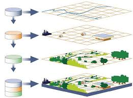

Metodologia


Som un grup de investigació dedicat a l'estudi del potencial de l'energia solar fotovoltaica a la demarcació de Tarragona. Amb una combinació d'investigadors experts i recursos avançats, estem compromesos amb la investigació innovadora per abordar els reptes energètics del nostre temps. Aquí a la nostra pàgina principal, us convidem a explorar el nostre treball, els nostres resultats i el nostre impacte en la transició cap a un futur energètic sostenible.
Més informacióL'estudi es centra en l'avaluació dels recursos energètics renovables a nivell local per impulsar la Transició Energètica desitjada. Els objectius principals inclouen analitzar la consciència i el potencial de producció d'energia fotovoltaica als edificis públics de la província de Tarragona, difondre aquesta i fomentar el debat social. Per assolir aquests objectius, es proposen accions com la creació d'eines per calcular el potencial de generació d'energia fotovoltaica als terrats dels municipis, definir escenaris probables d'aprovació de panells solars, prioritzar edificis públics per a la producció d'energia, i recopilar informació sobre les raons de l'adopció o no de solucions fotovoltaïques.